認識論は、認識（Erkenntnis）についての様々な根本問題を解決しようとする哲学の一部門として、客観についての知識がいかにして得られるか、またいかにして正しい知識が得られるかということに関する理論をいう。すなわち認識の起源、対象は何であり、認識の方法と発展はいかにしてなされるかなどを明らかにする理論である。
認識論の英語である epistemology は、ギリシア語の知識を意味する epistemeと、学問を意味する logia を結びつけた言葉で、フェリアー（J.F. Ferrier, 1808-64 ）が初めて使用したといわれる。また、ドイツ語のErkenntnistheorie はラインホルト（K.L. Reinhold, 1758-1823 ）によって使われた言葉であるといわれている。
認識論は、すでに古代および中世の哲学においても存在していたが、近世に至り、人間性の回復や人間による自然への主管の高まりとともに、哲学の中心的な課題として登場してきた。そして、存在論と並んで哲学の主要な部門を形成するに至ったのである。
すでに言及したように、統一思想は多くの現実問題を根本的に解決することのできる基準をもっている。特に今日に至って、認識論に対する研究熱が次第に冷えていき、認識に関する問題は哲学の領域から医学の領域に移されたような印象を与えている。しかし、医学がその問題を完全に解決したかというとそうではない。医学が認識の過程に対する生理学的基礎を確立したという点で、認識に関する問題点の解決に貢献したということは事実である。しかし医学的な認識の理論にも、まだ解決されていない点がある。このような未解決の問題を含めて、従来の一切の認識論上の問題を一括して解決したのが統一認識論である。
認識論は、観念論と唯物論の対立という本体論的な問題ともかかわっている。また認識は、実践活動とも密接につながっている。したがって正しい認識論を確立しなければ、現実の問題を正しく解決できないということになる。そこで、従来の認識論の問題点を解決しうる新しい認識論が必要となるのである。ここにそのような要請にこたえるべく提示されたのが、統一思想に基づいた統一認識論である。
まず従来の主要な認識論について、その要点を紹介し、それらがもっている問題点を指摘することにする。次に統一認識論を紹介し、従来の認識論が解決できない問題を本認識論によって見事に解決することができるということと、従来のすべての認識論の核心が本認識論に含まれており、本認識論は文字どおりの「統一認識論」であることを明らかにしようとするのである。最後に、本統一認識論も他の部門と同様に、文鮮明先生の指導のもとで体系化されたことを明らかにしておく。
認識論に関する研究はすでに古代から行われてきたが、それが哲学の中心課題として提起されたのは近世に入ってからである。認識論を初めて体系的に説いたのはロック（J. Locke, 1632- 1704）であり、彼の『人間悟性論』はその画期的な労作として知られている。
対象をいかに正しく認識するかということを、従来の認識論は主として次のような三つの側面において扱っているが、それがまさに認識の三つの論点である。認識の三つの側面の論点とは、第一は、認識の起源に関するものであり、第二は、認識の対象に関するものであり、第三は、認識の方法に関するものである。そしてそれぞれの論点において、互いに対立する二つの立場があるのである。
認識の起源に関しては、認識が感覚によって得られるという経験論と、生得観念によって得られるという理性論（または合理論）の二つの立場が対立するようになり、認識の対象に関しては、対象が客観的に実在するという実在論と、認識の対象は主観（主体）の観念または表象だけであるという主観的観念論の二つの立場が対立するようになり、認識の方法に関しては、主として先験的方法と弁証法的方法の二つの主張があった。
経験論と理性論の対立において、経験論はのちに懐疑論に陥り、理性論は独断論に陥るようになった。そしてカントは、この両者を批判的方法あるいは先験的方法によって総合する立場を取った(1)。それがカントの、認識の対象は主観によって構成されるとする「先天的総合判断」の理論である。
その後、ヘーゲルの弁証法を唯物論的に焼き直したマルクスの唯物弁証法が現れたが、この唯物弁証法的方法による認識論が、まさにマルクス主義認識論すなわち弁証法的認識論である。これは、認識の内容と形式（思考形式）は外界の事物の反映であると見る共産主義の反映論または模写説である。
ここで特に明らかにしておきたいことは、本項目において従来の認識論を扱うことは、従来の認識論の内容を具体的、学術的に紹介しようとするのではないということである。ただ統一認識論が、従来の認識論が抱えている未解決の諸問題点を解決したということを参考として示すために、その問題点と関連のある事項を簡単に紹介しただけである。したがって本統一認識論それ自体を理解するには、「従来の認識論」の項目は省略してもよいくらいである。
すべての知識は経験から得られると見るのが経験論であり、それに対して真なる認識は経験から独立した理性の作用によって得られると見るのが理性論または合理論である。いずれも十七―十八世紀に現れたのであるが、イギリスの哲学者たちは経験論を説き、大陸の哲学者たちは理性論を説いた。
ベーコン
経験論の基礎を確立したのはフランシス・ベーコン（F. Bacon, 1561-1626 ）である。彼は著名な著作『ノーウム・オルガヌム』（新オルガノン、Novum Organum, 1620 ）において、彼は伝統的な学問は無用な言葉の連続にすぎず、内容的には空虚であるといい、正しい認識は自然の観察と実験によって得られると主張した。そのとき、正しい認識を得るためには、まず先入的な偏見を捨て去らねばならないとして、その偏見として四つの偶像（Idola 、イドラ）を挙げた。
第一は、種族の偶像（Idola Tribus ）である。これは、人の知性は平らでない鏡のようなものであるために、事物の本性をゆがめて写しやすいという、人間が一般に陥りやすい偏見をいう。例えば、自然を疑人化させて見る傾向がそうである。
第二は、洞窟の偶像（Idola Specus ）である。これは、あたかも洞窟の中から世界を眺めるように、個人の独特な性質や習慣や狭い先入観などによって生じる偏見である。
第三は、市場の偶像（Idola Fori ）である。これは、知性が言葉によって影響されるところからくる偏見をいう。そのため全く存在しないものに対して言葉が作られ、空虚な論争がなされることもある。
第四は、劇場の偶像（Idola Theatri ）である。これは、権威や伝統に頼ろうとするところから来る偏見をいう。例えば、権威のある思想や哲学に無条件に頼ろうとするところからくる偏見などがそれである。
このような四つの偶像を取り除いてから、われわれは自然を直接観察して、個々の現象の中にある本質を見いださなければならないといって、ベーコンは帰納法を提示した。
ロック
経験論を体系づけたのはロック（J. Locke, 1632-1704 ）であり、主著『人間悟性論』において、その主張を詳細に展開した。彼はまず、認識における生得観念を退けた。生得観念とは、人間が生まれつきもっている、認識に必要な観念のことをいうのである。彼は、人間の心は本来、白紙（タブラ・ラサ、tabula rasa ）のようなものであり、白紙に文字や絵を書けばそのまま残るように、心に入った観念は心の白紙にそのまま書かれる（認識される）といった。つまり彼は、認識は外部から心に入ってくる観念によってなされると見たのである(2)。
ところで、観念は二つの方向から心に入ってくるのであるが、一つは感覚（sensation）の方向であり、もう一つは反省（reflection）の方向である。それが認識の起源である。すなわちロックにおいては、感覚や反省を通じた経験が認識の起源である。感覚とは、感覚器官に映る対象の知覚のことをいう。すなわち黄色い、白い、熱い、冷たい、柔らかい、堅い、苦い、甘いなどの観念をいうのである。反省とは、心の作用をいい、考える、疑う、信ずる、推理する、意志するなどがそれである。この反省の時にも観念が得られる。
ところで、観念には単純観念（simple idea ）と複合観念（complex idea ）があるという。単純観念とは、感覚と反省によって得られる、個々ばらばらに入ってくる観念であり、それらが悟性の働きによって、結合、比較、抽象されることによって、より高次の観念をなしたものが複合観念である。
そして単純観念には、固体性（solidity ）、延長（extension ）、形象（figure ）、運動（motion ）、静止（rest ）、数（number ）のように、対象自体に客観的に備わっている性質と、色（color ）、香（smell ）、味（taste ）、音（sound ）のように、主観的にわれわれに与えられる性質があるとして、前者を第一性質、後者を第二性質と呼んだ。
複合観念には、様相（mode ）、実体（substance ）、関係（relation ）の三つがある。様相とは、空間の様相（距離、平面、図形など）、時間の様相（契機、持続、永遠など）、思惟の様相（知覚、想起、推理）、数の様相、力の様相など、事物の状態や性質、つまり属性を表す観念である。実体とは、単純観念を起こす物自体をいうのであり、諸性質を担っている基体（substratum ）いわゆる物自体に対する観念である。そして関係とは、因果の観念のように、二つの観念を比較することによって生ずる観念（同一、差異、原因、結果など）をいう。
ロックは、「［認識とは］われわれのもつ観念の間にある結合と一致、または不一致と背反の知覚である(3)」と見た。そして、「およそ真理とは、観念の一致不一致をそのとおりに言葉で記すことである(4)」と述べた。そして彼は、観念の分析を行うことによって、認識の起源の問題に答えようとしたのである。
ロックは、直覚的に認識される精神と、論理的に認識される神の存在を確実なものと考えた。ところで、外界における物体の存在は否定できないとしても、感覚的にしか知りえないから確実性をもつことはできないとした。
バークリ
バークリ（G. Berkeley, 1685-1753 ）は、ロックのいう物体の第一性質と第二性質の区別を否定し、第一性質も第二性質と同様に主観的であるといった。例えば距離は、客観的に存在するもの（延長）、つまり第一性質の観念のように見えるが、それも主観的なものだというのである。距離の観念は、次のようにして得られる。すなわち、われわれは一定の距離の向こう側にある事物を目で見て、次にそこまで足で地を踏んで歩いて行き、手で触れる。そのような過程を繰り返すとき、ある種の視覚はやがてある種の触覚（例えば歩く時の足の裏の触覚）を伴うであろうことを、あらかじめ予想するようになる。そこに距離の観念が生じるのである。つまり、われわれは延長としての距離をそのまま客観的に見ているのではないのである。
バークリは、ロックのいう諸性質の担い手としての実体をも否定し、事物は観念の集合（collection of ideas）にすぎないとした。そして、「存在とは知覚されるということである」（esse is percipi）と主張した。このようにしてバークリは、物体という実体の存在を否定したが、知覚する実体としての精神の存在については少しも疑わなかった。
ヒューム
経験論を究極まで追究したのがヒューム（D. Hume, 1771-76 ）であった。彼は、われわれの知識は印象（impression）と観念（idea）に基づいていると考えた。印象とは、感覚と反省による直接的な表象をいい、観念とは、印象が消えたのちに記憶または想像によって心に表れる表象をいう。そして、印象と観念の両者を総称して知覚（perception）と呼んだ。
彼は、単純観念の複合に際して、類似（resemblance）、接近（contiguity）、因果性（cause & effect）を三つの連想法則として挙げた。ここで、類似と接近に関する認識は確実なものであって問題はないが、因果性に関しては問題があるという。
彼は、因果性に関する例として、稲妻が光ったのちに雷の音を聞いたとすれば、普通、人は稲妻が原因であり、雷鳴が結果であると考えるが、ヒュームは単なる印象としての両者を原因と結果として結びつける理由は何もないといい、因果性の観念は主観的な習慣や信念に基づいて成立するものであるという。また鶏が鳴いたのちに、しばらくして太陽が上るということは経験的に誰でも知っている現象であるが、そのとき、鶏が鳴くことが原因で、太陽が上るのがその結果だとはいえない。因果性として考えられている認識は、そのように主観的な習慣や信念に基づくものであるという。
このようにして経験論はヒュームに至り、懐疑論に陥ってしまった。彼はまた、実体性の観念については、バークリと同様に、物体という実体の存在を疑った。さらに彼は、精神（心）という実体の存在までも疑ったのであり、それは知覚の束（bundle of perceptions ）にほかならないと考えた。
以上のような英国の経験論に対して、感覚によっては正しい認識は不可能であり、理性による演繹的、論理的な推理によってこそ正しい認識が得られると見る立場が、デカルト、スピノザ、ライプニッツ、ヴォルフなどを中心とした大陸の理性論（合理論）である。
デカルト
理性論の始祖とされるデカルト（R. Descartes, 1596-1650 ）は、真の認識に至るために、すべてのものを疑うことから出発する。それがいわゆる方法的懐疑（methodical doubt ）と呼ばれるものである。
彼はまず、感覚はわれわれを欺くと考えて、すべての感覚的なものを疑った。なぜ彼はそのような方法を取ったのだろうか。それは真なる真理を得るためであった。すなわちこの世界のすべてを疑い、甚だしくは自分自身までも疑ってみて、それでもなお疑いえないものがあるとすれば、それはまさに真実であり、真理であるからである。それで彼は、可能な限りあらゆるものを疑い、また疑ったのである。その結果、一つの事実のみは疑いえないことを彼は悟ったのである。それはわれが疑う（思推する）という事実である。そこで彼は、「われ思う、ゆえにわれあり」
（ Cogito, ergo sum ）という有名な命題を立てたのである。
この「われ思う、ゆえにわれあり」という命題がデカルトのいう哲学の第一原理であるが(5)、この命題が間違いなく確実であるのは、この認識が明晰（clear ）かつ判明（distinct ）であるからだという。したがってここに、「われわれがきわめて明晰に判明に理解するところのものはすべて真である(6)」という一般的規則（第二原理）引き出されるのである。ここで明晰（clear ）とは、事物が精神に明確に現れることをいい、判明（distinct ）とは、明晰であるとともに、他のものから確実に区別され、粉らわしくないことをいう(7)。明晰の反対が曖昧（obscure ）であり、判明の反対が混同（confused ）である。
ここに、思惟を属性とする精神と、延長を属性とする物体の存在が確実なものとして認められる。すなわち、第一原理と第二原理からデカルトの物心二元論が成立する。第一原理から「心」（思惟）の実在が、第二原理から「物質」（延長）の実在が証明されるのである。
ところで、明晰かつ判明なる認識が確実であることが保証されるためには、悪霊がひそかに人を欺いているというようなことがあってはならない。そのためには神の存在が必要とされる。誠実なる神が人間を欺くことはありえないから、神が存在するとすれば、認識に誤りが生ずるはずがないのである。そして彼は、次のようにして神の存在を証明した。
第一に、神の観念はわれわれのうちにある生得観念（本有観念）であるが、その観念が存在するためには、必ずその原因がなくてはならないのである。
第二に、不完全なわれわれが完全な存在者（神）の観念をもつということから神の存在が論証される。
第三に、最も完全な存在者（神）の概念は、その本質としての実体が必然的に存在するということを含んでいることから、神の存在が論証される。
このようにして神の存在が証明された。したがって神の本質である無限、全知、全能が明らかになり、さらに神の属性の一つとして誠実性（veracitas ）が保証される。そして明晰・判明なる認識に確実な保証が与えられるようになるのである。デカルトは、神と精神と物体（物質）の存在を確実なものとしたが、その中で真の意味での独立的な存在は神のみであり、精神と物体は神に依存している存在であると考えた。そして精神と物体は、それぞれ思惟と延長をその属性とする、相互に全く独立した実体であるとして、彼は二元論を主張した。
以上のように、デカルトは明晰・判明なる認識は間違いなく確実であるということを論証したが、彼はそれによって数学的方法に基づいた合理的な認識の確実さを主張しようとしたのである。
スピノザ
スピノザ（B. de Spinoza, 1632-77 ）も、デカルトと同様に、厳密な論証によって真理を認識することができると考え、特に幾何学的方法を哲学に用いて論理的な理論展開をしようとした。
理性によって、一切の真理を認識することができるというのがスピノザの哲学の前提である。すなわち、理性によって「永遠の相のもとに」事物をとらえ、さらに神との必然の関係において全体的、直覚的にとらえるとき、真なる認識が得られるのである。ここで「永遠の相のもとに」事物をとらえるということは、すべてのものを必然の過程において（必然の連続から）理解するという意味である。そうした立場からすべての事物を見るとき、人ははかない事物、流れいく現象に執着し、心を煩わされなくてもよいのであり、むしろ今まで、はかないものと思っていた事物や現象、さらにはわれわれ自身までも、神の永遠の真理の表現として、貴重なものとしてとらえられるようになるのである。そのとき、真なる生命を得て、完全に到達し、無限な喜び、真なる幸福を得るようになるのである。これが永遠の相のもとに事物をとらえるということの意味である。
またそれは、明晰・判明な理性と霊感によって得られる自覚であるという。彼は認識を「感性知」、「理性知」、「直覚知」の三つに分けた。そのうち、知性による秩序づけのない「感性知」は不完全なものであり、「理性知」と「直覚知」によって真なる認識が成立すると考えた。ここにスピノザのいう直覚知とは、あくまで理性に基づいたものであった。
デカルトが精神と物質を、それぞれ思惟と延長をその属性とする互いに独立した実体であると考えたのに対して、スピノザは実体は神のみであり、思惟と延長は神の属性であるとした。彼は神と自然の関係を、能産的自然（natura naturans ）と所産的自然（natura naturata ）の関係であると見て、両者は切り離すことができないといい、「神は自然である」という汎神論的思想を展開した。
ライプニッツ
ライプニッツ（G.W. Leibniz, 1646-1716 ）も数学的方法を重んじ、少数の根本原理からあらゆる命題を導いてゆくことを理想と考えた。彼は、人間の認識する真理を二つに分けた。すなわち、第一に純粋に理性によって論理的に見いだされるもの、第二に経験によって得られるものに分けて、前者を「永遠の真理」または「理性の真理」と名づけ、後者を「事実の真理」または「偶然の真理」と名づけた。理性の真理を保証しているのは同一律と矛盾律であるが、事実の真理を保証するのは「いかなるものも十分な理由なくして存在しえない」という充足理由律であるとした。
しかしこのような真理の区別は、人間の知性に対してのみあてはまるものであり、人間において事実の真理と見なされるものも、神は論理的必然性によって認識しうると見ているのである。ゆえにライプニッツにおいて、究極的に理性的認識が理想的なものと思われたのである。
彼はまた、真なる実体は宇宙を反映する「宇宙の生ける鏡」としてのモナド（monade 、単子）であるとした。モナドは、知覚と欲求の作用をもつ非空間的な実体であり、無意識的な微小知覚（petite perception ）から、その集合としての統覚（apperception ）が生じるといった。そしてモナドには、物質の次元の「眠れるモナド」、感覚と記憶をもつ動物の次元の「魂のモナド」（または「夢みるモナド」）、普遍的認識をもつ人間の次元の「精神のモナド」の三段階のモナドがあり、最高次元のモナドが神であるといった。
ヴォルフ
ライプニッツの哲学を基調にしながら、さらに理性的な立場を体系化したのがヴォルフ（C. Wolff, 1679-1754 ）である。ところがその理論の体系化過程において、ライプニッツの真の精神が薄れたり歪曲されたりしたのであり、さらにライプニッツの主要部分が彼の理論体系から抜けていたのである。特にライプニッツのモナド論や予定調和論は歪曲された。カントは、初めはこのヴォルフ学派に属していたが、のちに彼を合理主義的な独断論の代表者として鋭く批判した。ヴォルフは、根本原理から論理的必然性によって導かれる理性的な認識こそ真の認識であるといい、すべての真理は同一律（矛盾律）に基づいて成立すると考えた。彼は、事実に関する経験的認識の存在も認めていたが、理性的認識と経験的認識には何ら関係性はなく、経験的認識は真の認識とはなりえないとした。
このようにして大陸の理性論は事実に関する認識を軽視して、一切を理性によって、合理的に認識しうると考えるようになり、結局、ヴォルフに至って独断論に陥るようになった(8)。
次は、認識の対象の本質をいかなるものと見るかという問題である。認識の対象は主体から独立して客観的に存在するという主張が実在論であり、認識の対象は客観世界にあるのではなくて、主体の意識の中に観念としてのみあるという主張が主観的観念論である。
実在論
実在論には、次のようなものがある。すなわち素朴実存論、科学的実存論、観念実存論（概念実在論）、そして弁証法的唯物論などである。第一の素朴実在論は、自然的実在論ともいうが、物質からなる対象が主観に対して独立にあるという立場であり、われわれの目に見えるとおりに事物が存在するという常識的な見解をいう。言い換えれば、われわれの知覚は対象を正確に模写していると見る立場である。
第二の科学的実在論は、次のようである。すなわち、対象は主観と独立して存在しているが、感性的認識はそのままでは客観的認識とはなりえないとして、感覚を越えた悟性の作用によって、対象から得た経験的事実に科学的な反省を加えることによって、実在を正しく知りうるという見解である。例えば色彩は視覚的現象であるが、科学はこれに科学的批判を加えて、色彩（例えば赤色）は一定の波長をもつ電磁波（光線）に基づいた感覚であると見るのである。また視覚上の稲光りと聴覚上の雷鳴は、科学的には空中で起こる放電現象によるものと見るのである。このように、常識的な実在観に科学的な反省を加えた理論が科学的実在論である。
第三の観念実在論は、客観的観念論ともいう。対象の本質は人間の意識を超えた精神的な客観的なものであるという見解をいう。すなわち精神は人間のみにあるのでなく、人間が出現する前から世界の根源として存在したのであり、この根源的な精神こそ世界の真の実在であり、宇宙の原型であり、万物はその表現にすぎないと見る立場である。例えばプラトンは、事物の本質であるイデアを真なる実在と考え、世界はイデアの影にすぎないと主張した。またヘーゲルは、世界は絶対精神の自己展開であると主張した。
さらに弁証法的唯物論において、対象は意識から独立して存在し、意識に反映される客観的実在と見るために、やはり実在論である。それは事物が鏡に映るように、外部の万物が人間の意識（脳髄）に反映されたものが認識であると見る立場である。しかし反映された内容それ自体が必ずそのままでは真実ではないのであり、実践（検証）によってその真実性が確認されるとき、初めて真実となると見るのであって、それが弁証法的認識論すなわち共産主義認識論である。
主観的観念論
実在論は上述したように、認識の対象が、物体であるか観念であるかにかかわらず、主観と独立して存在すると見るのである。それに対して、認識の対象は人間の意識から独立して存在せず、人間の意識に現れる限りにおいて、その存在が認められるというのが主観的観念論である。バークリがその代表であるが、「実在とは知覚されるということである」（esse is percipi ）という命題がその主張をよく表している。また「自我の働きを離れて非我（対象）が存在するかどうかは全くいうことができない」というフィヒテ（J.G. Fichte, 1762-1814 ）や、「世界は私の表象である」（Die Welt ist meine Vorstellung ）といったショーペンハウアー（A. Schopenhauer, 1788-1860 ）も全く同じ立場にある。
すでに述べたように、認識の起源を経験と見た経験論は懐疑論に陥り、認識の起源を理性にあると見た理性論は独断論に陥った。そのような結果に陥ったのは、経験がいかにして認識になるのか、また理性によっていかに認識が成立するのかという問題、すなわち認識の方法を考察しなかったためである。このような認識の方法を重視し、これを本格的に扱ったのが、カントの先験的方法とヘーゲルやマルクスの弁証法的方法である。ここでは、カントとマルクスの方法について要点を紹介することにする。
英国の経験論は懐疑論に、大陸の合理論は独断論に陥ったが、この二つの立場を総合して新しい見解を立てたのがカント（I. Kant, 1724-1804 ）である。経験論は認識の起源を経験であると見て理性の働きを無視することによって、そして理性論は理性を万能なものと見なすことによって、両者共に誤ったとカントは考えた。そこでカントは、正しい認識を得るためには、経験がいかにして認識となりうるかということに対する分析から始めなければならないのであり、そのためには理性の働きの検討すなわち批判をしなければならないと考えた。
カントは『純粋理性批判』、『実践理性批判』、『判断力批判』の三つの批判書を著したが、それぞれ真理はいかにして可能であるか、善はいかにして可能であるか、美はいかにして可能であるか、という真善美の価値の実現に関する内容を扱っている。そのうち認識論に関するのが『純粋理性批判』である。
『純粋理性批判』の要点
カントは、知識は経験を通じて増大するという事実と、正しい知識は普遍妥当性をもたなければならないという事実を根拠として、経験論と理性論を統一しようとした。経験によって初めて認識能力が作用することは自明のことであるが、そこにおいてカントが見いだしたのは、認識する主観のうちに先天的な認識の形式（観念）が存在するということであった。すなわち、対象から来る感性的内容（感覚、質料、感覚の多様、感覚的素材ともいう）が主観の先天的形式によって秩序づけられることによって、認識の対象（経験の対象）が成立することであった。従来の経験論や理性論が、いずれも対象を直接的に把握するのに対して、カントは、認識の対象は主観によって構成されるといい、その考え方を「コペルニクス的転回」と自賛した。カントの認識論は、このように対象そのものの認識を目指すものではなくて、客観的真理性はいかにして獲得されるかを明らかにしようとするものであって、これを先験的（超越的ともいう、transzendental ）方法と名づけた。
カントによれば、認識は判断である。判断は命題であるが、そこには主語と述語がある。したがって認識を通じて知識が増えるということは、判断（命題）において、主語の概念の中になかった新しい概念が述語の中に含まれていることを意味する。カントはそのような判断を総合判断という。それに対して、主語の概念の中に述語の概念がすでに含まれている判断を分析判断という。結局、総合判断によってのみ新しい知識が得られるのである。
カントが挙げている分析判断と総合判断の例には、次のようなものがある。「物体は延長をもっている」という判断は、物体の概念の中にすでに延長の意味が含まれているから分析判断である。他方、「直線は二点間の最短の線である」という判断は総合判断である。直線という概念は長短という量を含まず、ただまっすぐであるという性質を示しているにすぎないからである。すなわち最短という概念は全く新たに付け加わったものである。
しかし総合判断によって新しい知識を得るとしても、その知識が普遍妥当性をもたなければ、それは正しい知識とはなりえない。知識が普遍妥当性をもつためには、それは単なる経験的認識であってはならず、経験から独立した先天的（アプリオリ）な要素をもたなくてはならない。つまり総合判断が普遍妥当性をもつためには、それは先天的な認識すなわち先天的総合判断でなければならない。そこでカントが取り組んだ問題は、「アプリオリな総合判断はいかにして可能であるか(9)」ということであった。
内容と形式
カントは、内容と形式の統一として、経験論と理性論の総合を成し遂げようとした。内容とは、外界の事物からの刺激によってわれわれの感性に与えられた表象すなわち意識内容をいう。内容は認識の素材（Stoff ）または質料（Materie ）であって、外来的なものであるから後天的、経験的な要素である。
他方、形式とは質料すなわち感覚の多様を総合・統一する限定性であり、枠組みである。すなわち感性的段階において形成された各種の質料を統一する骨格である。この形式こそ先天的なものであり、その感性的内容に統一性を与える枠である。この先天的形式には二つある。一つは感覚の多様を直観的に時間的・空間的に限定する枠としての直観形式であり、もう一つは悟性の思惟を限定する思惟形式である。このような先天的な形式によって普遍妥当性をもつ総合判断が可能となるというのである。
時間的、空間的概念としての直観形式は、感性的段階において感覚の多様を時間的、空間的にとらえる直感的な形式である。しかし、感性的段階における直観のみでは認識は成立しない。認識が成立するためには、対象が悟性によって思惟される過程が必要である。したがって悟性段階における思惟を限定する枠組みとしての先天的な形式、つまり先天的な概念としての思惟形式が存在すると主張した。つまり、直観形式でとらえた内容と思惟形式（概念）の結合によって、認識が成立するとしたのである。そのことをカントは、「内容なき思惟は空虚であり、概念なき直感は盲目である(10)」という言葉で表現した。
カントは、悟性における先天的な概念（思惟形式）を純粋悟性概念（reiner Verstandesbegriff ）またはカテゴリー（範 疇、Kategorie ）と名づけた。そしてカントは、アリストテレス以来の一般論理学における判断の形式（悟性形式）を整理することによって、次のような十二のカテゴリーを導いた。
単一性（Einheit ）
１分量 （Quantität）- 数多性（Vielheit ）,総体性（Allheit ）,実在性（Realität ）
２性質（Qualität）- 否定性（Negation ）制限性（Limitation ）実体性（Substanz ）
３関係（Relation）- 實體性 (Substanz) 因果性（Kausalität ）相互性（Gemeinschaft ）
４様相（Modalität ）- 可能性（Möglichkeit ）,現実性（Wirklichkeit ）必然性（Notwendigkeit ）
このように、カントは対象の感性的内容が直感形式を通じて直感され、思惟形式（カテゴリー）を通じて思惟されることによって、認識は可能になると主張した。ところで、感性的段階における感性的内容（直観的内容）と悟性的段階における思惟形式は自動的に総合されるものではない。感性と悟性は同じ認識能力の一部分ではあるが、本質的には異質的なものである。ここに、両要素を共有する第三の力が必要である。それが構想力（創造力、Einbildungskraft ）であり、この構想力によって直観的内容と思惟形式が統一され、多様な質料の断片が総合、統一されるようになる。
このように感性的段階の直観的内容と悟性的段階の思惟形式が構想力によって総合・統一されてできた構成物が、まさにカントにおける認識の対象である。したがって、カントにおける認識の対象は客観的に外界に実在するものではなく、認識の過程において構成されるのである。
ここでカントの認識の対象は、経験論の後天的要素と理性論の先天的な要素が一つに統一されたものであることが分かる。そのとき、認識するわれわれの意識は経験的な断片的な意識であってはならず、経験的な意識の根底にある統一力をもつ純粋意識でなくてはならない。カントは、それを意識一般（Bewusstsein Überhaupt ）とか、純粋統覚（reine Apperzeption ）とか、先験的統覚（transzendentale Apperzeption ）と呼んだ。さらに、感性と悟性の働きがいかに結びつけられるかということに対しては、すでに述べたように、カントは構想力（Einbildungskraft ）がその媒介の役割を果たしているといった。
形而上学の否定と物自体
このようにして、現象世界における認識、すなわち自然科学や数学において、いかにして確実な認識が成立しうるかということを論じたのちに、カントは形而上学が果たして可能であるかどうかを検討した。感性的な内容のない形而上学は、感性的直感の対象になりえず、したがって認識することはできない。ところが人間の理性の働きは、悟性のみに関するのであって感性とは直接関係しないために、現実に存在しないものをあたかも存在しているかのように錯覚する場合がある。そのような錯覚をカントは、先験的仮象（transzendentaler Schein ）と名づけた。先験的仮象には、霊魂の理念、宇宙（世界）の理念、および神の理念の三つがある(11)。
そのうち、宇宙の理念すなわち宇宙論的仮象を純粋理性の二律背反（アンチノミー、 Antinomie ）と呼んだ。それは理性が無制約者（無限なる宇宙）を追究するとき、同一の論拠から二つの全く相反する結論に到達してしまうことを意味している。例えば「世界は時間における始まりをもち、空間に関しても限界をもつ」（定立）、「世界は時間における始まりをもたず、空間についても限界をもたない」（反定立）という二つの相反する命題がその例である。これは、感性に与えられた内容をそのまま世界全体として把握しようとするところからくる誤りであるとした。
カントは、対象から来る感性的内容が、主観の先天的な形式によって構成される限りにおいて認識が成立するのであって、対象それ自体、すなわち物自体（Ding an sich ）は、決して認識することはできないとした。物自体の世界とは、現象的世界の背後にあるとされる世界であり、叡智界ともいう。しかしカントは、物自体の世界を否定し去ったのではなかった。『実践理性批判』において、それは道徳を実現するために要請される世界であるとした。そして叡智界が成立するためには、自由と魂の不死と神の存在が要請されなくてはならないといった。
次は、唯物弁証法に基づいた認識論について説明する。唯物弁証法による認識論は、マルクス主義認識論または弁証法的唯物論の認識論といわれる。
反映論（模写説）
唯物弁証法によれば、精神（意識）は脳の産物または機能である(12)。そして、客観的実在が意識に反映する（模写される）ことによって認識がなされると見ている。これを反映論または模写説（teoriya otrazhenia, copy theory）という。そのことをエンゲルスは「われわれは……ふたたび唯物論的にわれわれの頭脳のなかの概念を現実の事物の模写と解した(13)」といい、レーニンは「人間の意識は（人間の意識が存在している場合に）それから独立して存在しておりかつ発展している外界を反映する(14)」といった。
マルクス主義認識論においては、カントのいう感性的内容がそのまま客観的実在の意識への反映であるのみならず、思惟形式も客観世界の実在形式の意識への反映であると見ている。
感性的認識、理性的認識、実践
認識は、単に客観世界の反映ではない。反映された内容は必ず実践を通じて検証されなくてはならない。レーニンはその過程を次のように説明している。「生き生きとした直感から抽象的思考へ、そしてこれから実践へ――これが真理の認識の、すなわち、客観実在の認識の、弁証法な道すじである(15)」。
唯物弁証法的認識の過程をさらに具体的に説明したのが毛沢東である。彼は、次のように述べている。
認識は実践にもとづいて浅いものから深いものへとすすむというのが、認識の発展過程に関する弁証法的唯物論の理論である。……すなわち認識は低い段階では感性的なものとしてあらわれ、高い段階では論理的なものとしてあらわれるが、いずれの段階も一つの統一的な認識過程のなかの段階である。感性と理性という二つのものの性質はちがっているが、だからといって、それらはたがいに切りはなされたものでなく、実践の基礎のうえで統一されているのである(16)。
認識の過程の第一歩は、外界の事物に接触しはじめることであって、それは感覚の段階である［感性的認識の段階］。第二歩は、感覚された材料を綜合して、整理し改造することであって、それは概念、判断および推理の段階である［理性的認識の段階(17)］。
このように認識は、感性的認識から理性的認識（または論理的認識）へ、理性的認識から実践へと進んでいくのである。ところで、認識と実践は一回きりのものではない。「実践、認識、再実践、再認識という形式が循環往復して、無限にくりかえされ、そして各循環ごとに実践と認識の内容が一段と高い段階にすすむ(18)」のである。
カントは、主観が対象を構成する限りにおいて認識がなされるのであり、現象の背後にある「物自体」は認識不可能であるといって、不可知論を主張した。それに対してマルクス主義は、現象を通じてのみ事物の本質は認識されるのであり、実践によって事実を完全に認識できると主張し、現象から離れた「物自体」の存在を否定したのである。エンゲルスは、カントに反論して次のようにいっている。
カントの時代には自然の物体に関するわれわれの知識は、極めて断片的であったので、カントもその自然物についてわれわれの僅かな知識の背後に何かまだ神秘な「物自体」があるかもしれぬといったのであろう。だが、科学のすばらしい進歩によってこれらのわかりにくかったものがつぎつぎに把握され、分析されたのである。それどころか、再生産（reproduce）されるまでになったのだ。いやしくも、われわれが作りうるものを、われわれが認識しえないとは考えられない(19)。
ところで認識と実践の過程において、実践がより重要であるという。すなわち毛沢東は「弁証法的唯物論の認識論は、実践を第一の地位におき、人間の認識は少しも実践からはなれることはできない(20)」というのである。そして実践というとき、一般的には人間の自然に対する働きかけや、人間のいろいろな社会活動をいうが、マルクス主義の場合、その中でも革命を最高の実践であると見ている。したがって、認識の最終的な目的は革命にあるといえる。実際、毛沢東は次のように述べている。「認識の能動的作用は、感性的認識から理性的認識への能動的な飛躍にあらわれるばかりでない。もっと重要なことは、それがさらに理性的認識から革命的実践へという飛躍にもあらわれなければならないということである(21)」。
ここで、論理的認識（理性的認識）における思惟形式について述べる。論理的認識は概念を媒介とした判断、推理などの思惟活動をいうが、そのとき、思惟形式が重要な役割を果たしている。反映論を主張するマルクス主義は、思惟形式は客観世界における諸過程の意識への反映、すなわち存在形式の意識への反映であると見ている。マルクス主義におけるカテゴリー（実在形式・思惟形式）には次のようなものがある(22)。
物質 - 限度
運動 - 矛盾
空間 - 個別と普遍
時間 - 原因と結果
意識 - 必然性と偶然性
有限と無限 - 可能性と現実性
量 - 内容と形式
質 - 本質と現象
絶対的真理と相対的真理
認識と実践の反復によって知識が発展していくのであるが、知識の発展とは、知識の内容が豊富になることと、知識の正確度がいっそう高くなることを意味する。したがってここに、知識（真理）の相対性と絶対性が問題になるのである。
マルクス主義は、客観的実在を正確に反映したものが真理であるという。すなわち、「われわれの感覚、知覚、表象、概念、理論が客観世界に一致し、それを正しく反映するならば、それらのものは真であるという。また真なる言明、判断または理論を真理とよぶ(23)」といっている。
さらにマルクス主義は、実践――結局は革命的実践――が真理の基準であると主張する。すなわち認識が真であるかどうかは、実践を通じて現実と比較し、認識が現実に一致しているかどうかを確かめればよいというのである。このことをマルクスは「実践のうちで人間はその思考の真理を、言いかえれば、その思考の現実性と力、此岸性を証明しなければならない(24)」といい、毛沢東は「マルクス主義者は、人々の社会的実践だけが、外界について人々の認識が真理であるかどうかの基準であると考える(25)」といった。結局、革命的実践が真理の基準であるということになるのである。
ところで、ある特定の時代の知識は部分的、不完全であって相対的真理にとどまるが、科学の発展によって知識は、完全な絶対的真理に限りなく近づくといい、絶対的真理の存在を承認する。それゆえ「相対的真理と絶対的真理のあいだにはこえがたい境界は存在しない(26)」とレーニンはいう。そしてまた相対的な真理の中に絶対的に真なる内容が含まれていて、それが不断に蓄積されたとき、絶対的真理になるというのである(27)。
以上で「従来の認識論」の項目をすべて終える。初めに述べたように、以上は従来の認識論の要点を参考として紹介しただけである。
以上、従来の認識論の概略を見てきたが、次に統一思想による認識論すなわち統一認識論を説明する。統一認識論は、統一原理の中の認識に関連した概念と、文鮮明先生の説教、講演の中のこれに関連した内容、そして著者の質問に対する文先生の解答などを根拠として立てた認識に関する理論体系である(28)。
統一認識論は、従来の認識論に対する代案としての性格も持っている。そこで、従来の認識論が扱った問題、例えば認識の起源、認識の対象、認識の方法などを扱いながら統一認識論を紹介することにする。
認識の起源
すでに述べたように、十七世紀から十八世紀にかけて、認識の根源が経験にあると見る経験論と理性にあると見る理性論（合理論）が形成されたが、経験論はヒュームに至って懐疑論に陥り、合理論はヴォルフに至って独断論に陥った。そのような問解を解決するために、カントは先験的方法によって、経験論と合理論の統一を図った。しかしカントは、物自体を不可知の世界に残してしまった。それに対して統一認識論の立場を紹介することにする。
今日までの認識論は、認識の主体（人間）と認識の対象（万物）の関係が明らかでなかった。そして人間と万物の関係が明らかでなかったために、理性論のように、認識の主体に重点を置いて、理性（あるいは悟性）が推論するままに認識はなされると主張したり、経験論のように、対象に重点を置いて、感覚を通じて対象をそのままとらえることによって、認識はなされると主張したのである。
カントは、対象から来る感性的要素と主体のもつ思惟形式が構想力によって総合・統一され、認識の対象が構成されることによって、認識が成立すると見た。これは主体（人間）のもつ要素と対象（万物）のもつ要素との総合によって、認識はなされることを意味する。しかし彼は両者（主体と対象）の必然的な関係が分かっていなかったために、主体のカテゴリーの枠内でしか認識できないという論理になり、結局、物自体は不可知になったのである。
ヘーゲルは、絶対精神の自己展開において、理念が自己を外部に疎外して自然となるが、のちに人間の精神を通じて本来の自己を回復するといった。そこでは自然は、人間の精神を生じるまでの一つの過程的存在にすぎず、恒久的な存在としての積極的な意味をもてなかった。そしてマルクス主義においては、人間と自然は互いに対立し合う偶然的な関係に置かれているのである。
このように見るとき、認識の主体（人間）と認識の対象（万物）の関係をいかに正しくとらえることができるかが問題となるのである。無神論の立場から見るとき、人間と万物の間には必然的な関係は成立しない。また宇宙はおのずから生じたとする宇宙生成説の立場から見ても、人間と万物は互いに偶然的な存在でしかない。神によって人間と万物が創造された事実が明らかになるとき、初めて人間と万物の必然的関係が確認されるようになるのである。
統一思想から見るとき、人間と万物はいずれも被造物として主体と対象の関係にある。すなわち人間は万物の主管主、主管の主体であり、万物は人間に対して喜びの対象、美の対象であり、主管の対象である。主体と対象は不可分の関係にある。例えていえば、機械における原動機と作業機の関係と同じである。原動機のない作業機は存在する必要がなく、また作業機のない原動機も存在することはできない。両者は主体と対象という必然的な関係を結ぶように制作されているからである。同様に、人間と万物も主体と対象という必然的な関係を結ぶように創造されているのである。
認識とは、主体である人間が喜びの対象であり、美の対象であり、主管の対象である万物を判断する行為である。そのとき、認識すなわち判断には「経験」を伴うと同時に、判断自体は「理性」の働きによってなされる。したがって認識には経験と理性が同時に必要である。このように統一認識論において、経験と理性は両者が共に必須のものであり、両者が統一されることによって、認識が成立すると見るのである。そして人間と万物は主体と対象の関係にあるから、人間は万物を完全にそして正確に認識することができるのである。
認識の対象
統一思想はまず、人間の外部に万物が存在していること、すなわち実在論を認める。人間は万物に対して主体であるから、万物を主管し――万物を栽培、養育したり、取り扱い、加工し、利用したりすること――万物を認識するのである。そのために万物は認識の対象として、また主管の対象として、人間と独立して人間の外部に存在しなければならないのである。
統一認識論はまた、人間は万物の総合実体相として、宇宙の縮小体すなわち小宇宙であるために、人間は万物の構造、要素、素性をことごとく備えていると見る。言い換えれば、人間の体を標本として象徴的に人間に似せて創造されたのが万物である。したがって、人間の体と万物は相似性をなしているのである。さらに、人間において、体は心に似せて造られているのである。
認識は必ず判断を伴うが、判断とは一種の測定作用であると見ることができる。測定には基準（尺度）が必要であるが、認識における基準となっているのが、人間の心の中にある観念であり、それを「原型」という。原型は心の中にある映像であり、内的な対象である。この心の中の映像（内的映像）と外界の対象から来る映像（外的映像）が照合されて、認識がなされるのである。
今日まで実在論は、人間のなかにある先在的な観念を無視して外界の存在だけを主張した。反映論を唱えるマルクス主義は、その代表である。またその反対に、人間の意識の中の観念だけが認識の対象になると主張したのが、バークリによって代表される主観的観念論である。ところが統一認識論においては、実在論と観念論（主観的観念論）が統一されているのである。
認識の方法
統一認識論の方法は、カントの先験的方法やマルクスの弁証法的方法とは異なっている。授受法、すなわち主体と対象の授受作用の原理が統一認識論の方法である。したがって方法から見るとき、統一認識論は授受法的認識論となるのである。
認識は主体（人間）と対象（万物）の授受作用によってなされるが、主体と対象にはそれぞれもたなくてはならない条件がある。あたかも芸術の鑑賞において、主体と対象がそれぞれ備えるべき条件があるのと同じである。作品を鑑賞するとき、主体が備えるべき条件は対象への関心と価値追求欲および主観的要素などであり、対象が備えるべき条件は創造目的と相対的要素の調和である。それと同様に、認識においても主体と対象に条件が必要になる。主体的条件とは、主体が「原型」と「関心」をもつことであり、対象的条件とは、対象が「属性（内容）」と「形式」をもつということである。
ところで授受作用には、存在の二段構造の原則に従って内的授受作用と外的授受作用がある。まず外的授受作用が行われ、続いて内的授受作用が行われることによって認識は成立する。そのように、授受作用によって認識がなされるという理論を授受法的認識論という。
関心をもつ主体（人間）と、対象的条件を備えた万物との間に授受作用が行われる。そのとき、まず感性的段階の心（感性）に対象の属性（内容）と形式（存在形式）が反映されて、映像としての内容（感性的内容）と形式（感性的形式）が形成される。これを「外的映像」という。外的授受作用（または外的四位基台）から現れる映像であるからである。この内容と形式（外的映像）と、主体が前から持っている原型（内容と形式：内的映像）との間にまた授受作用（対比型の授受作用）が行われる。それが内的授受作用（または内的四位基台の形成）である。この授受作用によって初めて認識が成立するのである。
ここで、統一認識論の方法とカントの先験的方法およびマルクス主義の弁証法的方法との差異について述べる。カントにおいて、内容（感性的内容）は外界（対象）から受け入れるものであり、形式つまり直観形式と思惟形式は主体が持っている先天的かつ主観的な要素である。したがって内容は対象に属し、形式は主体に属しているといえる。ところで、カントは物自体を不可知の世界に渡してしまったために、その感性的内容は実体のない内容、つまり主体（主観）のみに属する内容となってしまったのである。そして結局、カントにおいては内容も形式もすべて主体に属するということができる。カントがよく観念論者と呼ばれるのは、そのためである。しかるに授受法的方法においては、内容と形式は主体にも対象にも属する。すなわち、主体も内容と形式を備えており、対象も内容と形式を備えている。
マルクス主義の弁証法的方法においては、内容と形式はすべて客観的実在である対象に属だけするものであり、主体の意識はただ、これを反映しているにすぎないのである。このように見るとき、統一思想の授受法的方法は先験的方法と弁証法的方法を共に備える立場にあるということができる。すなわち統一認識論においては、外的授受作用に反映論的要素があり、内的授受作用に先験的要素があるのであり、弁証法的方法（反映論）と先験的方法が統一されているのである。
一般的に内容と形式をいうとき、事物の中にあるものを内容といい、外に現れた形を形式というが、認識論で扱う内容は事物の属性をいい、形式はその属性が規制されて現れる一定の枠組みのことをいう（すなわち属性が一定の枠組みを通して現れるとき、その枠組みを形式という）。
対象の内容と主体の内容
認識の対象は万物または事物であるから、対象の内容とは、万物（事物）がもっている、いろいろな属性、すなわち形態、重量、長さ、運動、色、音、匂い、味などをいう。したがって対象の内容は、物質的内容つまり形状的内容である。一方、認識の主体は人間であるから、主体の内容とは、人間がもっている、いろいろな属性をいうが、その属性も万物（事物）の属性と同じく、形態、重量、長さ、運動、色、音、匂い、味などの物質的内容である。
普通、人間の属性といえば、理性、自由、霊性などをいう場合が多いが、認識論では内容の相似性を扱っているために、対象（万物）と同じ属性を扱うのである。人間は宇宙の縮小体（小宇宙）であり、万物の総合実体相であるから、人間は万物のもつ構造、要素、素性などをすべて、統一的に（縮小的に）もっている。したがって人間は、万物のもっている属性と同じ属性を備えているのである。
しかし、主体（人間）と対象（万物）が同じ属性をもっているというだけでは、認識における授受作用は成立しない。認識は一種の思惟現象であるから、内容は主体の心にも備わっていなくてはならない。主体の心の中にある内容が原型である。正確にいえば、これは原型の中の内容の部分であって、原意識（生命体のもつ潜在意識…後述）の中に現れる原映像をいう。この原映像は人間の体の属性に対応した心的映像であるが、人間の体の属性は外界の万物の属性（物質的内容）に対応している。それゆえ心的映像つまり原映像は、万物の属性（物質的内容）に対応する心的内容となるのである。そのように人間の体の属性は万物の属性（物質的内容）に対応し、人間の心的映像（原映像）は人間の体の属性に対応しているのである。結局、人間の心的映像は万物の属性に対応している。したがって認識において、主体（人間）の心的映像（原映像）と対象の物質的内容（感性的内容）が互いに対応するようになり、主体と対象の間に授受作用が行われることによって、認識がなされるのである。
対象の形式と主体の形式
認識の対象である万物（事物）の属性は、必ず一定の枠組み（フレーム）をもって現れる。この一定の枠組みが存在形式である。存在形式は事物の属性の関係形式でもある。そして、この存在形式または関係形式が認識における対象の形式となるのである。
人間の体は宇宙の縮小体（小宇宙）であり万物の総合実体相であるから、人間の体は万物がもっている存在形式と同じ存在形式をもっている。ところで、認識における形式は心の中の形式すなわち思惟形式でなくてはならない。これは体の存在形式が原意識の中に反映したもの、すなわち形式像（または関係像）であって、原型の一部を成している。
原型の構成要素
認識において、判断の基準（尺度）となる主体の中の心的映像を原型というが、原型は次のような要素から構成されている。
まず第一に、原映像がある。これは、人体の構成要素である細胞や組織の属性が原意識に反映された映像である。つまり、原意識という鏡に映った細胞や組織の属性の映像が原映像なのである。原型を構成する第二の要素は、関係像すなわち思惟形式である。原意識には、人体の細胞や組織の属性だけでなく、属性の存在形式（関係形式）も原意識に反映されて、映像をなしている。それが関係像であって、この関係像が顕在意識の思考作用に一定の制約を与える思惟形式となっているのである。
以上の原映像と関係像（思惟形式）は経験とは関係のない観念、すなわち先天的な観念であって、原型にはそのほかに、過去および直前までの経験によって付加された後天的な観念もある。すなわち認識に先立つそれまでの経験によって得られた観念（経験的観念）は、その後の認識においては原型の一部を成すのである。したがって、われわれは一度経験した事物と同様な事物に出会うとき、容易にそれを判断しうるのである。そのように原型は原映像、関係像（思惟形式）、経験的観念の三つの要素から構成されているのである。
以上述べたように、原型は経験に先立っている先天的な要素と、経験を通じて得られた要素すなわち経験的要素から成っている。先天的な要素とは、本来の意味の原型のことであり、原意識に現れた原映像と関係像をいう。これは、経験とは関係のない「先天的な原型」である。それを「原初的原型」ともいう。そして経験的要素とは、日常生活の体験において心の中に映像として現れた経験的観念をいい、一度現れると、その後、原型の一部となるのである。それを「経験的原型」という。そのような先天的原型と経験的原型が結合した原型を「複合原型」という。日常生活における原型は、みな複合原型である。
原型の先在性とその発達
原型には先天的要素と経験的要素があるために、ある瞬間の判断は、それ以前に形成された原型（複合原型）がその判断の基準（尺度）となる。このように認識において、判断基準（原型）が必ずあらかじめ備わっているのである。この事実を「原型の先在性」という。カントは認識の主体がもっている形式を先天的（アプリオリ）であると主張したが、統一認識論では主体がもっている原型の先在性を主張するのである。
ところで人間が生まれながらもっている原型（原映像と関係像）は、出生直後の幼児の場合、細胞、組織、器官、神経、感覚器官、脳などの未発達のために、まだ不完全なものである。したがって認識は不明瞭なものとならざるをえない。しかし幼児が成長するにしたがって、体の発達とともに、原映像や関係像は次第に明瞭になってくる。それに経験によって得られた新しい観念が次々に加わってくる。そうして原型は、質的にも量的にも発達する。これは記憶量の増大または新しい知識の増大を意味するのと同時に、経験的原型の発達、さらには複合原型の発達を意味する。
原意識
『原理講論』には「被造物は原理自体の主管性または自律性によって成長する」（七九頁）とある。ここにいう主管性や自律性は生命力の特徴のことである。生命とは、生物体の細胞や組織に入っている潜在意識であって、潜在している感知力、覚知力、合目的的な能力である。言い換えれば、生命とは、感知性、覚知性、合目的性をもつ潜在意識である。ここに感知性とは、事物に関する情報を直観的に分かる能力をいい、覚知性は分かった状態を持続する能力をいい、合目的性は一定の目的をもちながらその目的を実現しようとする意志力をいう。原意識とは、根本となる意識という意味であるが、それは細胞や組織の中に入っている生命（宇宙意識）のことである。心の機能から見るとき、原意識は低次元の心である(29)。したがってそれは、細胞の中に入った低次元の宇宙心、または低次元の神の心であるということができる。
原意識は同時にまた生命である。宇宙意識が細胞や組織に入って個別化されたものが原意識であり、生命である。つまり細胞や組織の中に入った宇宙意識が生命である。あたかも電波がラジオに入って音声を出すように、宇宙意識が細胞や組織に入り込んで、それらを生かしているのである(30)。結局、原意識とは生命であって、それは感知性、覚知性、合目的性をもつ潜在意識である。
統一思想によれば、神はロゴスでもって宇宙を創造されるとき、生物の各個体の継代のために、すなわち繁殖によって種族を保存するために、その個体に固有なすべての情報（ロゴス）を物質的形態の記録（暗号）として細胞の中に封入されたと見る。その暗号がまさにＤＮＡ（デオキシリボ核酸）の遺伝情報であって、アデニン、グアニン、チミン、シトシンの四種類の塩基の一定の配列なのである。
創世記二章七節には、「主なる神は土のちりで人を造り、命の息をその鼻に吹き入れられた。そこで人は生きた者となった」とある。万物に対しても同様に、「神は土で細胞を造り、生命を吹きいれられた。そこで細胞は生きた細胞となった」といえる。細胞に吹き入れられた宇宙意識が原意識であり生命である。すなわち、宇宙意識が細胞、組織に吹き入れられることにより、生物体は生きたものとなるのである。
原意識の機能
次は、原意識の機能について説明する。原意識の機能は多様である。すなわち遺伝情報（暗号）の解読と情報の指示事項の遂行、そして情報の伝達などが、その代表的なものである。これについて具体的に説明する。まず宇宙意識は細胞にしみ込んで原意識になると、そこに入っている細胞のＤＮＡの遺伝情報（暗号）を解読する。そして原意識はその情報の指示に従って、細胞や組織を活動せしめるのである。そしてまた、生体の成長にしたがって、細胞や組織の増大、新器官の形成と成長、各細胞間および組織間の相互関係の形成などを実現するための機能を発揮する。
一方で、必要によって、各細胞や組織に新しく発生する情報を末梢神経（求心神経）を通じて中枢神経に伝達し、中枢は再び末梢神経（遠心神経）を通じて細胞や組織に新しい指令（情報）を下すのであるが、そのとき、その情報を原意識が伝えるのである。そのように細胞や組織と中枢との間で情報を授受する伝達者の役割も、原意識が引き受けるようになるのである。それらが原意識の機能である。
そのような機能はみな、原意識（潜在意識）の感知性、覚知性、合目的性に基因する。そして、意識がこのような機能を発揮する間に原映像や関係像が発達するようになるのである。
原意識像の形成
生物体の中の潜在意識すなわち原意識は、感知性をもっている。したがって原意識は、直感的に細胞や組織の構造、成分、特性などを感知する。さらに、細胞や組織の状況変化までも原意識は感知している。そのとき原意識が感知した内容、すなわち原意識に反映した映像が「原映像」である。原意識に原映像が生じるということを比喩的に表現すれば、物体が鏡に映ること、またはフィルムの露出によって物体がフィルムに映ることと同じであるといえる。
また原意識は、覚知性をもつ。それは感知した状態を持続すること、すなわち原映像を保持することであって、保持性ということもできる。
細胞、組織、器官などの体内の諸要素は、それぞれ個性真理体および連体として、内的または外的な授受作用を行うことによって、存在し、作用し、成長している。例えば、ある一つの細胞の場合、その細胞内の諸要素（核と細胞質）間に起きる授受作用が内的授受作用であり、その細胞と他の細胞との間に起きる授受作用が外的授受作用である。そのとき授受の関係が成立するが、それに必要ないろいろな条件を「関係形式」という。万物は例外なく、そのような条件を備えた状況のもとでのみ存在しうるために、この関係形式は「存在形式」ともいう。存在形式は、万物が存在する際に組み立てられた枠組みである。
この存在形式が原意識に反映されてできる映像のことを「関係像」あるいは「形式像」という。原意識は原映像と関係像（形式像）をもっているが、原映像と関係像を合わせたものを「原意識像」という。
思惟形式の形成
すでに述べたように、認識主体（人間）のもつ内容には、物質的内容（形状的内容）と心的内容（性相的内容）があるが、物質的内容は対象（事物）の属性と同じものであり、心的内容は原映像である。ここにおいて、物質的内容が心的内容の対応源となっているのである。ここで対応源とは、一対一の対応関係にある二要素の中で因果的関係にある要素をいう。それは例えば、物体と影のような関係と同じものである。物体が動けば影もそれにしたがって動き、物体が停止すれば影も停止する。そのとき、物体は影の対応源という。
体と心の関係において、体が健康であるとき、心が健全になり、体が弱いとき心も弱くなるとすれば、そのとき体は心の対応源となるのである。同様に、認識主体がもつ物質的形式（形状的形式）と心的形式（性相的形式）において、物質的形式は心的形式の対応源となるのである。ここで物質的形式は、まさに対象（事物）の存在形式である。
すでに述べたように、人間の体は万物の総合実体相であるため、万物の属性がそのまま体の属性となり、体の属性が原意識に反映されて原映像すなわち心的内容となるのである。そのように、万物の存在形式もそのまま体の存在形式となり、それが原意識に反映されて心的形式すなわち関係像となる。心的形式とは、まさに思惟形式である。つまり、思惟形式の根は存在形式である。したがって存在形式は、思惟形式の対応源となるのである。
細胞や組織における関係形式（存在形式）が原意識に反映して関係像となるが、原意識の関係像は一種の情報となって大脳中枢に伝達される。まず数多くの関係像は、末梢神経を通って下位中枢を経たのち、大脳の上位中枢（皮質中枢）に集まる。その過程において、いろいろな関係像が整理され、分類されながら、思惟形式が確定され、皮質中枢に到達すると見るのである。すなわち、外界の存在形式に対応する心的形式としての思惟形式が心理の中に形成されるのである。
この思惟形式が人間が思考するときに、その思考が従うべき枠組みとなる。すなわち、人間の思考は思惟形式に従ってなされる。そのことを「思惟形式が思考を規定する」という。思惟形式は最も根本的、一般的な基本概念を意味する範疇（カテゴリー）と同じものである。
存在形式と思惟形式
思惟形式の対応源が存在形式であるから、思惟形式を知るためには、まず存在形式を理解しなくてはならない。事物が存在するためには、個体と個体（または要素と要素）が関係を結ばなくてはならないが、その時の形式すなわち関係形式がとりもなおさず存在形式である。統一思想から見るとき、最も基本的な存在形式として次の十個がある。
① 存在と力……すべての個体が存在するとき、必ずそこには力が作用している。存在を離れた力はなく、力を離れた存在もない。神からの原力が万物に作用して万物を存在せしめているからである。
② 性相と形状……すべての個体は内的な無形なる機能的要素と外的な有形なる質量、構造、形態から成っている。
③ 陽性と陰性……すべての個体は性相と形状の属性として陽性と陰性をもっている。陽性と陰性は、空間的にも時間的にも常に作用しており、陽陰の調和によって美が現れる。
④ 主体と対象……すべての個体は、自体内の相対的要素間において、あるいはその個体と他の個体との間において、主体と対象の関係を結んで授受作用を行いながら存在している。
⑤ 位置と定着……すべての個体は一定の位置に定着して存在している。すなわち各位置にはそこにふさわしい個体が定着している。
⑥ 不変と変化……すべての個体は必ず変化する面と変化しない面をもっている。被造物はすべて自同的四位基台（静的四位基台）と発展的四位基台（動的四位基台）の統一をなしているからである。
⑦ 作用と結果……すべての個体おいて、主体と対象の相対的要素が授受作用をすれば必ずそこに結果が現れる。すなわち授受作用によって合性体を成すか、新生体を生じる。
⑧ 時間と空間……すべての個体は時間と空間の中に存在する時空的存在である。存在するということは、四位基台（空間的基台）を形成し、正分合作用（時間的作用）を行うことを意味する。
⑨ 数と原則……すべての個体は数的存在であると同時に法則的存在である。すなわち、数は必ず法則または原則と一体になっている(31)。
⑩ 有限と無限……すべての個体は有限的（瞬間的）でありながら、無限性（持続性）をもっている。
以上は統一原理の四位基台、授受作用、正分合作用を基盤として立てた、最も基本的な存在形式である。これは認識の対象である万物の存在形式であると同時に、認識の主体である人間の体の構成要素の存在形式なのである。
これらの存在形式に対応する心的な形式が思惟形式である。すなわち、①存在と力、②性相と形状、③陽性と陰性、④主体と対象、⑤位置と定着、⑥不変と変化、⑦作用と結果、⑧時間と空間、⑨数と原則、⑩有限と無限などが、そのまま思惟形式となるのである。存在形式は物質的な関係形式であるが、思惟形式は観念の関係の形式であり、基本的概念なのである。
もちろん、このほかにも存在形式や思惟形式はありえるが、ここに挙げたものは統一思想から見た最も基本的なものである。カントが主張したように、思惟形式は存在と無関係な状態にあるのではない。またマルクス主義が主張したように、外界の実在形式が反映して思惟形式となるのではさらにない。人間自身がもとより、外界の存在形式に対応した思惟形式を備えているのである。例えば人間自身、もとより時間性と空間性を備えた存在であるがゆえに、時間と空間の思惟形式をもっているのであり、もとより主体性と対象性を備えた存在であるがゆえに、主体と対象の思惟形式をもっているのである。そのように、十個の存在形式に正確に対応する思惟形式が人間の心に備わっているのである。
授受作用
『原理講論』には、主体と対象が相対基準を造成して授受作用を行えば、「生存と繁殖と作用などのための力を発生する」（五○頁）とされている。ここで「繁殖」とは、広い意味で出現、発生、増大、発展などを意味する。また「作用」は運動、変化、反応などを意味する。認識は知識の獲得や増大を意味するから、授受作用による「繁殖」の概念に含まれるのである。したがって認識は「主体と対象の授受作用によってなされる」という命題が立てられるのである。
認識における主体は一定の条件、すなわち対象への関心と原型を備えた人間をいい、対象は内容（属性）と形式（存在形式）を備えた万物（事物）をいう。この両者の授受作用によって認識がなされるのである。
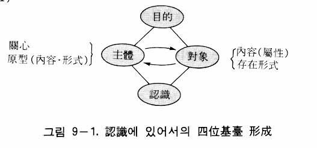
四位基台の形成
主体と対象の授受作用は必ず目的を中心としてなさるのであるが、その授受作用の結果として認識が成立するのである。したがって認識は、四位基台形成によってなされるのである（図９―１）。四位基台は、中心、主体、対象、結果という四つの位置から成る。次に、それぞれの位置
について説明することにする。
① 中 心
授受作用の中心になるのは目的であるが、目的には原理的な目的と日常的現実的な目的がある。原理的な目的は、神が被造物を造られた創造目的であるが、それは被造物から見れば、被造物の存在目的すなわち被造目的である。神の創造目的は心情（愛）がその動機となっているために、人間も愛を動機として万物を認識するのが本来の認識のあり方である。
創造目的（被造目的）には性相的目的と形状的目的があるが、それぞれに全体目的と個体目的がある。認識における人間の全体目的とは、隣人、社会、国家、世界に奉仕するために知識を得ることであり、個体目的とは、個人の衣食性の生活と文化生活のために知識を得ることである。一方、対象である万物の全体目的は、人間に知識と美を与えたり、人間に主管されて人間を喜ばせることであり、個体目的は人間から認められ愛されることである。しかし人間の堕落のために、万物はそのような創造目的（被造目的）を完遂することができず、そのために万物は、うめき苦んでいるのである（ローマ八・二二）。
日常的な目的（または現実的な目的）とは、原理的な目的を土台とした個別的な目的、すなわち日常生活における各個人の目的をいう。例えば植物学者が自然を見るとき、学問的な立場から自然界の植物に対する知識を得ようとするであろう。画家が同じ自然に対するとき、美の追求のための知識を得ようとするであろう。また経済人が自然に対するときは、自然を開発して事業を起こすという立場で自然に対する知識を得ようとするであろう。それはみな喜びを得ようとするためである。そのように喜びを得るという原理的な目的は同じであっても、各人の日常的な目的は人によって千差万別であるといえる。
② 主 体
認識において、主体が対象に対して関心をもつということは、主体のもつべき要件の一つである。関心がなければ、主体と対象の間に相対基準が成立できなくなり、授受作用ができなくなるからである。
例えばある人が道を歩いていて、友人に出会ったとしよう。彼が何か熱心に考えながら道を歩いていたとすれば、関心がそのことだけに注がれていたので、友人に気がつかないまま通り過ぎてしまうことであろう。また灯台守の夫人が寝ているとき、波の音では眠りは覚めないが、波の音よりも小さい自分の子供の泣き声によって目を覚ますことができる。これは波の音には関心がないから認識されないが、子供の泣き声にはいつも関心があるから小さな声でも感じるようになるのである。
しかし実際には、偶然に事物を認識する場合も多い。予期していないのに、急に稲妻を見て、雷の音を聞く場合はその顕著な例である。そういう場合には、主体に関心がなくても認識は可能であるかのようであるが、そのような場合にも、無意識的（潜在意識的）ではあるが、必ず関心が作用しているのである。人間は誰でも幼い時に、あらゆることに驚きと好奇心をもって接したことを記憶するであろう。その驚き、好奇心がまさに関心に由来するのである。また人は外国の地に初めて行った時にも、すべての事物に対して関心をもって接するであろう。しかし成長するにしたがって、あるいは、たびたび外国旅行をするにしたがって、関心は習慣化され潜在意識化されてしまう。そのとき関心がなくなったのではなく、潜在意識の中から関心が作用しているのである。
主体のもつべきもう一つの要件は、原型をもつことである。いくら対象に対して関心をもっても、原型がなければ認識はなされない。例えば初めて外国語を聞いた場合、その言葉が何を意味しているのか分からない。また一度も会ったことのない人に対するとき、その人は「見慣れない顔」に見えるが、過去に会ったことがあれば、たとえ忘れてしまったとしても何となく「見慣れた顔」と感じられることであろう。そのように、認識がなされるためには、主体の中に判断の基準となる原型が必ず備えられていなければならないのである。
③ 対 象
統一原理によれば、万物は人間の対象として、人間は万物の主体（主管主）として造られたために、主体である人間は対象である万物を愛でもって主管するようになっている。したがって人間は、万物を鑑賞したり、認識しながら主管するのである。そして万物は、美の対象、認識の対象となり得る要素を備えているのである。それが内容としての万物の属性と、形式としての存在形式（関係形式）である。そのような内容と形式が万物の備えるべき条件ではあるが、実は万物が自ら備えたものではなくて、神によって万物に与えられたものである。人間は万物の総合実体相であり、宇宙の縮小体であるから、万物のもっている内容と形式に対応して、縮小した形態として、やはり内容と形式を備えているのである。なお認識の対象には、自然の万物だけでなく、人間社会における事物や事件、人物などがある。
④ 結 果
目的を中心として主体と対象が授受作用すれば、必ず結果が現れる。ここで結果の性格を理解するためには、四位基台の性格をまず理解しなくてはならない。原相論で説明したように、四位基台には内的自同的四位基台、外的自同的四位基台、内的発展的四位基台、外的発展的四位基台の四種類がある。
認識は基本的には、主体の「内容と形式」と対象の「内容と形式」が授受作用を通じて照合され、合性一体化していく過程である。したがって、そのとき自同的四位基台が形成される。一方、創造や主管の場合には発展的四位基台が形成される。認識は、主管と密接な関係にある。認識のない主管も、主管のない認識も、いずれも完全なものとはなりえないのである。認識と主管は、人間と万物の授受作用において相対的な回路をなしている。つまり認識過程は、授受作用において対象から主体へと向かう回路であり、主管の過程は主体から対象へと向かう回路である。
ここで主管における発展的四位基台と、認識における自同的四位基台の関係を考えてみよう。主管とは、創造性を発揮することであるから、主管の四位基台は創造の四位基台と同じである。
原相論で説明したように、神は創造の二段構造、すなわち内的発展的四位基台（ロゴスの形成）と外的発展的四位基台を通じて万物を創造された。これらの発展的四位基台において、まず内的発展的四位基台が形成され、次に外的発展的四位基台が形成されたのである。すなわち、「内的な四位基台から外的な四位基台へ」という順序で万物が創造されたのである。ところが認識のための自同的四位基台の形成は、まず外的自同的四位基台が形成され、次に内的自同的四位基台が形成される。すなわち、「外的な四位基台から内的な四位基台へ」という順序に従って認識はなされるのである。
かくして認識は、内的自同的四位基台が形成されることによって、その結果としてなされるのであるが、直接的には外的な要素と内的な要素の照合によって成立するのである。
それでは、認識の過程は具体的にいかなるものであろうか。そのことを次に明らかにする。
人間は認識を通じて十分な知識を得るが、そのとき一定の過程を経るようになる。その過程が蘇生、長成、完成の三段階としての感性的段階、悟性的段階、理性的段階である。万物が成長するのに蘇生、長成、完成の三段階を経るのと同様である。
感性的段階の認識
これは認識過程の蘇生段階である。この段階では、まず外的自同的四位基台が形成される。意識的あるいは無意識的な目的を中心として、主体（人間）と対象（万物）の間に授受作用が行われ、対象の内容と形式が主体の感覚中枢（感性）に反映されて、映像または表象を形成する。それが感性的内容と感性的形式であって、これを「感性的認識像」という（図９―２）。
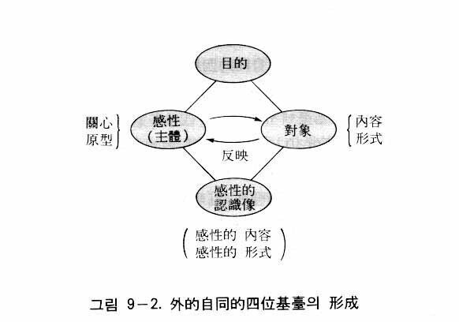
この段階が認識の感性的段階である。そのとき主体（感性）は関心と原型を備えているが、この感性的段階の原型はまだ認識作用に積極的に関与していない。感性的段階において形成される感性的内容や感性的形式は断片的な映像の集合にすぎないのであって、対象に似た統一的な映像とはなりえない。したがってこの段階では、対象が具体的に何なのか知ることはできない。
悟性的段階の認識
悟性的段階は、認識の長成的段階である。この段階において、内的な自同的授受作用によって内的な自同的四位基台が形成されるが、そのとき感性的段階から伝えられた断片的な映像が統一される。
この内的授受作用の中心となる目的は、感性的段階における外的四位基台の目的と同じであって、原理的および現実的目的がその中心となる。そのとき主体の位置にくるのは内的性相すなわち心の機能的部分であるが、認識において、それは知情意の統一体となっている。また心は、生心と肉心の合性体としての本心であって、それは動物の本能の場合とは次元が異なっている。認識において生心の機能は価値判断を主管し、肉心の機能は感覚を主管し、両者が合わせて記憶を主管する。したがって生心と肉心の合性体である本心は、認識において価値（真善美）を指向しながら、感覚を統括し、記憶を主管するのである。
そこで認識において、そのような心（本心）の機能的部分を特に「霊的統覚」と呼ぶことにする(32)。そのように認識において内的性相は、統覚力、対比力、価値判断力、記憶力として作用するが、実践においては、主体性としての価値実践力としても作用するのである。
内的四位基台の対象の位置すなわち内的形状には、感性的段階の外的四位基台において形成された感性的認識像すなわち感性的内容と感性的形式が移されてくる。すると、この感性的内容と感性的形式に対応する原映像と思惟形式すなわち原型が、霊的統覚によって記憶の中から引き出されてくる。そしてこの二つの要素、すなわち感性的認識像と原型が共に内的形状を成すのである。
そのような状況において授受作用が行われるが、それは授受作用は対比型の授受作用である。主体である霊的統覚が原型と感性的認識像という二つの要素を対比（対照）して、その一致または不一致を判別するからである。そのような内容を図で表せば、図９―３のようになる。
この対比によって認識がなされるのであるが、そのような対比を統一認識論は照合（collation ）という。ここに認識は照合によってなされるという結論になる。したがって、統一認識論を方法から見れば照合論となるのである。それに対してマルクス主義認識論は反映論であり、カントの認識論は構成論であった。
しかし、悟性的段階においてなされる一回の認識（内的授受作用）では、認識が不十分であるか、認識が成立しない場合がある(33)。その時は、新しい知識を得るまで、実践（実験、観察、経験など）を行いながら内的授受作用を継続していくのである。
理性的段階の認識
理性的段階は、認識の過程における完成的段階である。ここで理性とは、概念（観念）による思惟の能力をいう。理性は悟性的段階の認識においても、判断力、概念化の能力として作用するが、理性的段階の認識においては、悟性的段階において得られた知識を資料として、思惟作用によって新しい知識を得るのである。
結局、理性的段階における認識とは思考である。これは原相における内的発展的四位基台による構想（ロゴス）の形成に相当するものである。思考は心の中の授受作用によってなされるが、それは対比型の授受作用である。すなわち、以前からもっている内的形状の中のいろいろな要素（観念、概念、数理、法則など）から必要なものを選んで、内的性相がそれらを連合、分離、分析、総合することによって、いろいろな観念（概念）をあれこれと操作するのである。観念（概念）の操作とは、内的性相が内的形状の諸観念や諸概念を対比することによって、すなわち対比型の授受作用を行うことによって、新しい観念（概念）を得ることを意味する。例えば、いろいろな観念の中から「父」という観念と「息子」という観念を対比して、適当であると感じられたならば、この二つの観念を結合して「父子」という新しい観念を得るのである。
またもう一つの例として、いろいろな多くの概念の中から「社会」という概念と「制度」という概念を対比して、適当であると感じたならば、この二つの概念を合わせて「社会制度」という新しい概念を作る。そのように、いろいろな観念や概念の中から必要なものを選び出し、結合させて、新しい観念や概念を作ることを観念（概念）の操作というのである。そのような観念（概念）の操作を繰り返しながら知識は増大していくのである。この内的な授受作用において、内的性相は霊的統覚としての機能を果たしているのである。理性的段階の認識は、内的発展的四位基台の形成を通じてなされている（図９―４）。
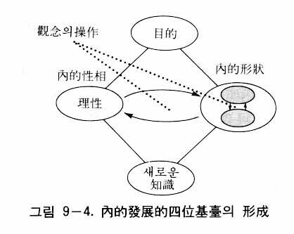
理性的段階の認識において、新しい知識の獲得はその度ごとに判断の完結を伴いながら連続的になされる。すなわちいったん得られた新しい知識（完結した判断）は思考の資料として内的形状の中に移されて、次の段階の新しい知識の形成に利用される。そのようにして知識（思考）は発展していくのである。かくして内的発展的四位基台形成を反復しながら、知識は発展していくのである（図９―５）。
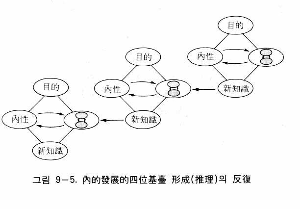
内的四位基台の発展は実践を並行しながら行われている。すなわち実践を通じて得られた結果（新生体）が内的四位基台の内的形状に移されて、新しい知識の獲得に利用される。新しい知識が得られれば、再び新たな実践を通じてその真偽が検証される。そのようにして、反復的な実践すなわち反復的な外的発展的四位基台形成が認識のための内的発展的四位基台の形成に並行して行われるのである（図９―６）。
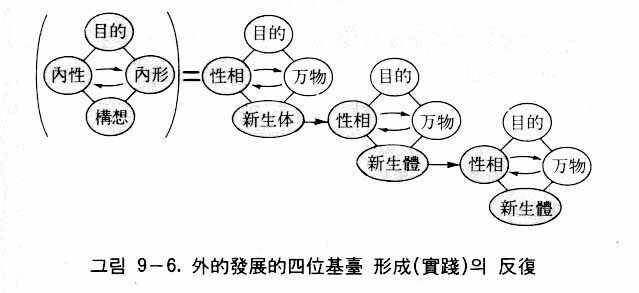
統一認識論は統一原理または統一思想を根拠とした認識論であるから、従来の認識論と異なる点があるのは当然である。ところで統一認識論の主張が科学的見解に反するとか、それと距離があるとしたら、統一認識論も過去の認識論と同じく、主唱者の単なる主張として終わり、普遍妥当性は認められないであろう。
従来の認識論、すなわち経験論も、理性論も、カントの先験的認識論も、マルクス主義認識論も、みな科学的な見解と無関係な理論であったか、または今日の科学的見解と合わなくなっている。したがって、科学の発達している今日において、それらはほとんど説得力をもつことができない。ところが、統一認識論は科学的な立場から見ても妥当な理論であるといえる。そのことを以下に論じることにする。
心理作用と生理作用の並行性
統一思想は、二性性相である原相に似せて万物は創造されたという理論に基づいて、すべての存在は性相と形状の二性性相として存在することを主張する。人間は心と体の二重的存在であるが、人体を構成している細胞、組織、器官なども、すべて心的要素と物質的要素の統一体なのである。そればかりでなく、人間のあらゆる活動や作用も二重的であって、そこには必ず心理作用と生理作用が統一的に並行して行われているのである。したがって統一思想から見れば、認識作用においても、必ず心理的過程と生理的過程が並行しているのである。例えば、心と脳の授受作用によって精神作用（意識作用）が現れるのである（図９―７）。ここにおいて、心とは生心（霊人体の心）と肉心（肉身の心）の合性体である。
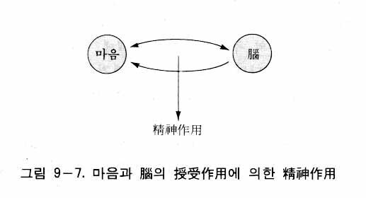
脳の研究の世界的権威であるペンフィールド（W. Penfield, 1891-1976 ）は、脳をコンピュータにたとえ、「脳はコンピュータ、心はプログラマー」であると述べた(34)。同じく著名な脳の研究者であるエックルス（J.C. Eccles, 1903-97 ）も、心と脳は別のものであり、心と脳の相互作用として心身問題をとらえなくてはならないといった(35)。彼らの主張は、心と脳の授受作用によって精神作用が営まれるという統一思想の見解と一致するものである。これは、統一認識論の主張が科学的見解と一致する実例の一つとなるのである。
原意識、原映像の対応源
次に、統一認識論における独特な概念である原意識と原映像に対して、それを裏づける科学者の見解を見てみよう。
すでに説明したように、原意識は細胞や組織に浸み込んだ宇宙意識または生命であり、原映像はこの意識のフィルムに写された映像である。ここに原意識は目的意識であり、原映像は情報にほかならない。これは細胞が目的意識をもちながら、情報に基づいて一定の機能を果たすことを意味している。
ここで、サイバネティックスの理論によって原意識と原映像を検証してみよう。サイバネティックスとは、機械における情報の伝達と制御の自動化方式に関する科学のことをいう。生物においては、情報が感覚器官を通じて中枢に伝達され、中枢がそれを統合して適切な指令を末梢神経を通じて効果器（筋肉）に送るが、この現象は自動機械の自動操作と同じようなものなので、生物におけるサイバネティックス現象と呼ばれる。しかし生物の場合、その自動現象は文字どおりの自動操作ではなく、生物がもっている自律性による自律的な操作である。
このようなサイバネティックスの現象は、一個の細胞においても見られる。すなわち、細胞質から核への情報の伝達とこれに対する核の反応が絶えず自律的に繰り返されながら、細胞の生存、増殖などが営まれている。このようなサイバネティックスの現象を通じて、一個の細胞においても自律性があることを見いだすことができる。この細胞における自律性こそ、生命であり、原意識にほかならない。
例えばフランスの生理学者、アンドレ・グド＝ペロ（Andrée Goudot-Perrot ）は、その著『生物のサイバネティックス』の中で次のように説明している。細胞の情報源をもっている細胞核が細胞質の小器官（ミトコンドリア、ゴルジ体など）に命令を与えて、細胞の生活に必要な化学反応を行っている(36)。ここに細胞の情報とは、生物の解剖学的形態および本質的機能に関する一切の情報をいうのである(37)。
ここに、次のような疑問が当然生じてくる。第一に、情報は解読され記憶されなければならないが、その解読と記憶の主体は何かということである。第二に、細胞の生活に必要な化学反応を起こすために、細胞核が命令を発しようとすれば、細胞核は細胞内部の状況を正確に覚知していなければならないが、その覚知の主体は何かということである。
それに対して現象面のみを扱っている科学（生理学）の立場からは答えることができない。しかし二性性相の理論をもつ統一思想は、そこに性相として合目的な要素すなわち意識が作用していることを明言することができる。細胞の中にあるこの意識がまさに原意識であり、情報が原映像なのである。
認識の三段階の対応源
以上、認識における三段階である感性的段階、悟性的段階、理性的段階について説明した。ところで今日の大脳生理学において、大脳皮質にこのような認識の三段階に対応する生理過程があると考えられている。
大脳皮質は大きく分けて、感覚器からの信号を受け取る感覚野、随意運動に関係する信号を送り出す運動野、そしてそれ以外の連合野に分けられる。連合野は前頭連合野、頭頂連合野、側頭連合野に分けられる。前頭連合野は意志、創造、思考などの機能にかかわり、頭頂連合野は知覚、判断、理解などの機能にかかわり、側頭連合野は記憶のメカニズムに関係していると考えられて
いる。
まず、光、音、味、香り、感覚などの情報が、末梢神経を通じて、それぞれ視覚、聴覚、味覚、臭覚、皮膚感覚（体性感覚）などの感覚野に伝わる。感覚野における生理的過程が感性的段階の認識に対応するものである。次に、感覚野の情報は頭頂連合野に集められて、そこで知覚され、判断（理解）されるのであるが、これが悟性的段階の認識に対応する生理的過程である。そして、この理解、判断に基づいて前頭連合野において思考がなされ、創造活動が行われるのであるが、これが理性的段階の認識に対応する過程である。このように三段階の認識には、それぞれ大脳の生理的な過程が対応しているのである。これを図で表すと、図９―８のようになる(38)。
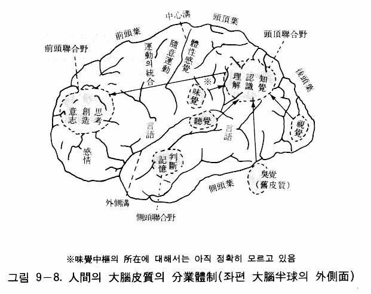
情報伝達における
心理的過程と生理的過程の対応関係
人体において、絶えず体の外部や内部から様々な情報を受け入れて、それを処理し、それに対応する働きがなされている。目、耳、皮膚などの受容器（感覚器）が受け入れた刺激は、インパルスとなって神経線維の求心路を通って中枢神経に至る。中枢神経はその情報を処理して指令を送るのであるが、その指令がインパルスとして神経繊維の遠心路を通って、筋肉、分泌腺などの効果器に伝達されて反応を生じさせるのである（図９―９）。
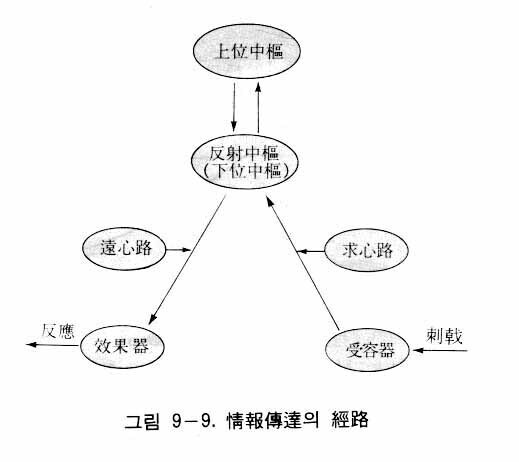
ある刺激を受けたとき、無意識のうちに、すなわち上位中枢とは無関係に反応が起きる場合を反射という。その場合、脊髄、延髄、中脳などが、その反射中枢となって、刺激に対して適切な指令を送っているのである。
では受容器を通じて入った情報は、いかにして伝わるのであろうか。受容器に入った情報は、神経細胞において電気的な神経インパルスに変わる。神経インパルスとは、神経線維の興奮部と興奮していない部分との間の膜電位の変動をいうが、それが神経線維に沿って移動するのである。そのとき生じる電位の変化を活動電位という。神経線維の膜は静止状態において内部が負に帯電しているが、インパルスが通過するとき、荷電が逆転して、内側が正に帯電する。これは、ナトリウムイオンが内側に流れ込むことによって起こる現象である。次いで、カリウムイオンが外側に流れ出ることによって荷電はもとの状態を回復する。このようにして膜電位の変動が起り、それが移動していくのである（図９―10）。
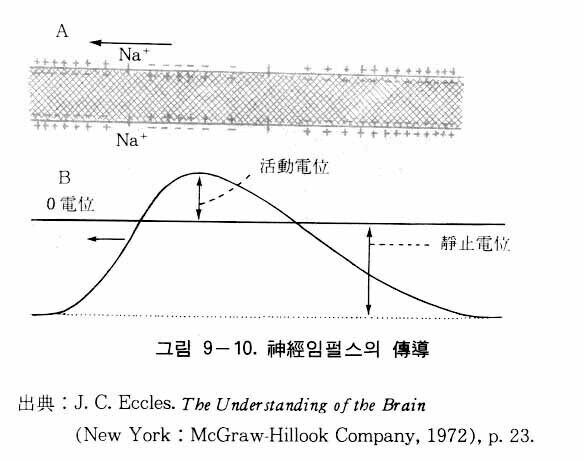
次に、神経細胞の連結部、すなわちシナプスでは神経インパルスはいかにして伝達されるのであろうか。シナプスは体液が入っている空間であるが、電気的なインパルスがシナプスに至り、化学的な伝達物質に変換されて、シナプスの間隙を移動する。そしてその化学物質が次の神経線維に達すれば、そこで再び電気的インパルスに変換される。すなわち、一つの神経細胞の神経線維を流れる電気的な信号が、シナプスでは化学的な信号（化学物質）に変わり、この化学的信号が次の神経細胞の神経線維に達すると、再び電気的な信号に変わるのである。シナプスにおける神経伝達物質は、電気インパルスが流れる神経が運動神経や副交感神経の場合はアセチルコリンであり、交感神経の場合はノルアドレナリンであるといわれている。以上説明した情報伝達のメカニズムを図で表せば、図９―11のようになる。
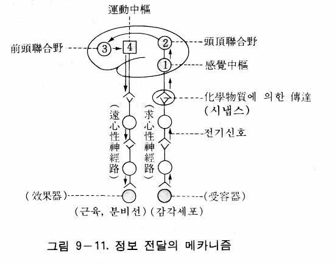
以上が情報伝達に対する生理的過程であるが、統一思想から見れば、この生理的過程の背後に必ず意識過程が存在しているのである。すなわち神経線維における活動電流や、シナプスにおける化学物質の移動の背後において、原意識が作用しており、原意識の情報の内容を覚知しながら情報を中枢へ伝達していると見るのである。言い換えれば、原意識を情報の伝達者と見なすことができる。それで神経線維における活動電流やシナプスにおける化学物質の出現は、情報の伝達者である原意識によって起こる物理的現象と見るのである。
原型の形成における対応関係
先に原映像と関係像の対応源が、それぞれ細胞や組織の内容と、諸要素の相互関係であることを明らかにしたが、それらをそれぞれ末端原映像と末端関係像と呼ぶことにする。それに対して、認識の悟性的段階において現れる原映像と関係像を中枢原映像と中枢関係像と呼ぶことにする。
末端原映像が神経路を通じて上位中枢に至る過程において、中枢神経系の各位において選別され、さらに複合、連合されて中枢原映像となるのである。末端関係像の場合も、中枢神経系の各位において選別され、さらに複合、連合されて中枢関係像となるが、それが大脳皮質に至って思惟形式となるのである。なお、その際、中枢神経系の各位は、それぞれがその位置における原映像と関係像を保管しているのである。
認識の原型を構成しているものには、このような原映像と思惟形式のほかに経験的映像または経験的観念と呼ばれるものがある。それは、それまでの経験において得られた映像（観念）が、記憶中枢に保管されているものであって、それもその後の認識において原型の一部になるのである。そのとき、すでに述べたように、原映像と思惟形式を「先天的原型」（または「原初的原型」）といい、経験的映像を「経験的原型」というのである。
中枢神経系において、情報が下位から上位へと移行するにしたがって、情報の受容量（入力）と放出量（出力）が増大すると同時に、情報の処理の仕方は、よりいっそう包括化され普遍化される。これは、一国の行政において、行政組織が上位になるにしたがって、扱う情報量が増大し、情報の処理方式もより包括的、普遍的になるのと同じである。
最も上位の中枢すなわち大脳皮質において、情報の受容はとりもなおさず認識であり、情報の保管は記憶であり、情報の放出は構想（思考）と創造と実践である。このような大脳皮質の統合作用とは次元が異なるけれども、下位中枢の統合作用も、その方式は大脳皮質の場合と同様であって、意識による合目的的な統合作用がそれぞれの中枢において行われているのである。合目的的な統合作用とは、生理的統合作用と意識的（精神的）統合作用の統一をいう。つまり、中枢神経系の各位において、生理的な統合作用と意識的な統合作用が並行して統一的に行われているのである。したがって、中枢神経の情報（神経インパルス）の伝達という生理過程には、必ず、判断、記憶、構想などの心理過程が対応しているのである。
関係像（形式像）の伝達という観点から見るとき、下位の中枢から上位の中枢に移行するにしたがって多様な情報が処理されて次第に単純化されるが、これは末端の個別的な関係像が上位に移るにしたがって次第に普遍化され一般化されることを意味する。そして大脳皮質に至ると、完全に概念化されて思惟形式すなわち範疇となるのである。これは、あたかも行政施策が行政組織の末端に行くほど、より個別性、特殊性を帯びるようになり、中央に行くほど、一般性、普遍性を帯びるようになるのと同じである。
原型と生理学
原型とは、認識に際して主体があらかじめもっている観念や概念をいうが、これを別の言葉で記憶ということができる。先に、人間は先天的な原型と経験的な原型をもっていることを説明したが、それらは生理学者の表現を借りれば、「遺伝的記憶」と経験による「獲得した記憶」に相当するといえる(39)。
生物体としての人間の細胞や組織に関する情報である「遺伝的記憶」は大脳辺縁系――大脳の、新皮質に包み込まれている古い皮質からなる部分――などに蓄えられていると大脳生理学は見ている。それでは「獲得した記憶」が医学的に見て、いかにしてどこに蓄えられているのであろうか。
記憶には、数秒間持続する短期の記憶と、数時間から数年間にわたって持続する長期の記憶がある。短期の記憶は、電気的な反復回路に基づいているとされている。一方、長期の記憶に対しては「ニューロン回路説」と「記憶物質説」の二つの説が唱えられてきた。ニューロン回路説は、個々の記憶は接合部（シナプス）に変化がもたらされた特殊なニューロンの回路網に蓄えられるという立場であり、記憶物質説は個々の記憶に対して、ＲＮＡやペプチドなどの記憶物質が関係していると見る立場である。しかし最近では、記憶物質説を主張する研究者は少なくなっている(40)。
長期の記憶の座に関しては、次のように考えられている。大脳の内部の大脳辺縁系には海馬と呼ばれる部分がある。この海馬が情報の記憶の役割を果たし、その後、記憶は大脳新皮質（側頭葉）に永続的に蓄えられるとされている(41)。すなわち記憶は、海馬を通じて側頭葉に蓄えられると見ているのである。
認識に際して、このような記憶（蓄積されている知識）が、感覚器官を通じて入ってきた外界からの対象の情報と照合され、判断されるということを、アンドレ・グド＝ペロ（Andrée Goudot-Perrot ）は次のように述べている。「感覚受容器によって受けとられる情報――これらの情報は、大脳皮質感覚中枢によって獲得され《記憶》のなかに貯蓄されている知識と照合され、判断される(42)」。これは、外界から入ってきた情報（外的映像）が原型（内的映像）と照合されて一致・不一致が判断されることが認識であるという統一認識論の主張と、軌を一にする見解である(43)。
観念の記号化と記号の観念化
最後に、記号の観念化と観念の記号化について述べる。主体である人間が対象を認識するとき、対象の情報が感覚器に達すれば、それはインパルスとなって感覚神経を伝わって上位中枢に達し、大脳皮質の感覚中枢において、インパルス（一種の記号）は観念化されて、意識の鏡に一定の映像（観念）として映る。これは「記号の観念化」である。それに対して実践の場合、ある一定の観念に基いて行動がなされるが、そのとき観念がインパルスとなって運動神経を伝わっていき効果器（筋肉）を動かす。インパルスは一種の記号であるから、これは「観念の記号化」である。
今日の大脳生理学によれば、認識において生じた観念が、記憶として脳の一定の場所に貯蓄されるとき、その観念はニューロンの特殊な結合の様式として記号化され、またその記号化された記憶が必要に応じて想起されるとき、意識は記号を解読して観念として理解するという。これは記憶の貯蔵と想起においても「観念の記号化」と「記号の観念化」が行われていることを意味する。例えば、大脳生理学者ガザニガ（M.S. Gazzaniga ）とレドゥー（J.E. LeDoux ）は次のように述べている。
我々の経験は非常に多くの特徴を持っているから、経験の個々の特徴が脳の中でそれれぞれ特異的に符号化されるとみなされる(44)。
記憶の貯蔵と符号化および符号の解読が多面的な過程で、脳の中で多量的につかさどられているという事実は今後もっと明らかにされるであろう(45)。
このような「観念」と「記号」の相互の転換は、あたかも一次コイルと二次コイルの間を誘導によって電流が移動するように、「観念」を担っている性相的な心的コイルと、「記号」を担っている形状的な物質的コイル（ニューロン）との間に生じる、一種の誘導現象であると見なすことができる。「観念」と「記号」の相互転換は、認識作用が心的過程と生理的過程の授受作用によって営まれていることを裏づけるものである。
次に、従来の「方法から見た認識論」の中で、代表的なカントの認識論とマルクス主義の認識論を統一思想の立場から批判してみることにする。
先験的方法の批判
カントは、主体（主観）には先天的な思惟形式（カテゴリー）が備わっていると主張した。しかし、カントのいう思惟形式をよく検討してみれば、客観的な存在形式でもある。例えば客観世界のすべての事物は、時間と空間という形式の上で存在し、運動している。また科学者は、客観世界の時間と空間という形式の上で、一定の現象を人為的に起こすことができる。したがって、時間と空間の形式は主観的であるだけでなく、客観的な形式でもあるのである。因果性の形式についても同様である。科学者は、自然界の現象の中から多くの因果関係を発見し、その因果関係に従って同様な現象を実際に起こすこともできる。これは、客観世界に実際に因果関係があることを示している。
またカントは、主観（主体）の形式と対象から来る内容が結合することによって、認識がなされるといったが、統一思想から見れば、主体（人間）も対象（万物）も、内容と形式を共にもっているのである。すなわち主体が備えているのは、カントのいう先天的な形式だけではなくて、内容と形式が統一された先在性の原型（複合原型）であり、また対象から来るのは、混沌とした感覚の多様ではなくて、存在形式によって秩序づけられている感性的内容なのである。
しかも主体（人間）と対象（万物）は相対的な関係にあって、相似性をなしている。したがって、主観が対象を構成することによって認識がなされるのではない。主体のもっている「内容と形式」（原型）が、対象のもっている「内容と形式」と授受作用によって照合され、判断されることによって、認識がなされるのである。
不可知論に対する批判
カントは、現象的世界における自然科学的な知識のみを真なる認識であるとして、物自体の世界（叡智界）は認識できないものと規定した。そうすることによって、感性界と叡智界を全く分離してしまった。それは、純粋理性と実践理性の分離を意味し、科学と宗教の分離を意味していた。
統一思想から見るとき、物自体は事物の性相であり、それに対して感性的内容は形状である。事物において性相と形状は統一されたものであり、しかも性相は形状を通じて表現されるから、われわれは形状を通してその事物の性相を知ることができるのである。
さらに統一思想によれば、人間は万物の主管主であり、万物は人間の喜びの対象として、人間に似せて創造されたものである。万物が人間に似せて造られたということは、構造や要素において人間と万物が似ていること、したがって内容と形式も似ていることを意味する。それゆえ認識において、主体（人間）のもつ「内容と形式」と、対象（万物）のもつ「内容と形式」は相似性をなしていて、互いに照合することができるのであり、しかもその内容（感性的内容）を通じて物自体すなわち対象の性相が表現されるから、主体は対象の形状（感性的内容と形式）のみならず、性相（物自体）までも完全に認識することができるのである。カントは、人間と万物の原理的な関係が分らなかったために、また人間が霊人体と肉身の統一体であることが分からなかったために、不可知論に陥ってしまったのである。
反映論への批判
すでに述べたように、いくら外界が意識に反映したとしても、判断の基準（尺度）として、認識主体の中に外界の事物に対応する原型がなければ認識は成立しえない。さらに認識は主体と対象の授受作用によってなされるから、主体が対象に対して関心をもつことが必要である。外界の対象が主体の意識に反映したとしても、主体が対象に関心をもたなければ認識は成立しないからである。すなわち反映というような受動的な物質的過程だけでは認識は成立せず、積極的な心的過程（対象への関心や照合の機能）が関与することによって、初めて認識は可能となるのである。
感性的認識、理性的認識、実践への批判
マルクス主義認識論では、認識過程は感性的認識、理性的認識（論理的認識）、そして実践（革命的実践）の三段階よりなっている。
ここでまず問題となるのは、脳の産物あるいは機能であり、客観的実在を反映するという意識が、いかにして論理的な認識（抽象、判断、推理）などを行いうるか、またいかにして実践を指令しうるかということである。外界を反映する受動的な過程と、論理的な認識や能動的な実践の過程との間には、非常に大きなギャップがあるにもかかわらず、これについては何ら合理的な説明がなされていない。すなわち、論理が飛躍しているのである。
統一思想から見るとき、論理的な認識や実践は、脳における生理的過程のみでは決して説明されない。認識作用は、心（精神）と脳の授受作用によってなされるからである。すなわち論理的な認識や実践は、悟性や理性の働きをもつ心と、脳が授受作用することによってなされるのである。
次に問題になるのは、認識における実践の役割である。レーニンは認識は実践へ移行するといい、毛沢東は認識と実践の不可分性を主張しているが、その点に関しては統一思想は何ら異論はない。万物は人間の喜びの対象として創造されたのであり、人間は創造目的に従って万物を主管（実践）するようになっている。したがって人間は、主管のために万物を認識するのである。認識と実践は、人間と万物の授受作用の相対的な回路をなしているのであり（図９―12）、実践（主管）を離れた認識はなく、認識を離れた実践（主管）もないのである。
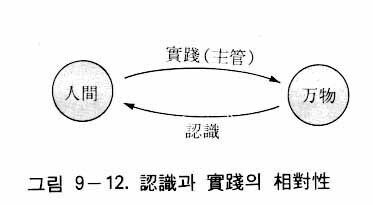
ところでマルクス主義の主張する実践とは、最終的には革命を目標とするものであった。それに対して統一思想は、認識と実践は、革命を目的としてなされるものでは決してなく、創造目的の実現のためになされなくてはならないことを主張する。創造目的の実現とは、神は人間を愛することによって喜ばれ、人間は万物を愛で主管し、喜びを得るような世界を実現することである。それゆえ認識も実践も、愛を通じて喜びを実現するために行われるのである。
絶対的真理と相対的真理に対する批判
レーニンと毛沢東は、絶対的真理の存在を承認し、人間は認識と実践を繰り返すことによって絶対的真理に限りなく近づくといった。しかし、彼らのいう絶対的真理における「絶対」の概念は曖昧である。レーニンは、相対的真理の総和が絶対的真理であるという。しかし、相対的真理をいくら総和しても、それは総和された相対的真理であるのみであって、絶対的な真理とはなりえない。
絶対的真理とは、普遍的でありながら、永遠性をもっている真理をいう。したがって、絶対者を基準としなければ絶対の概念が成立しない。絶対的真理は、価値論で説明したように、神の絶対的愛と表裏一体になっている。あたかも太陽の光の暖かさと明るさが表裏一体であって分けられないのと同じである。したがって、神の絶対的な愛を離れて絶対的真理はありえないのである。ゆえに神の愛を中心とするとき、人間は初めて万物の創造目的を理解し、万物に関する真なる知識を得るようになるのである。したがって、神を否定して、いくら実践したとしても、絶対的真理が得られるわけはないのである。
底本『統一思想要綱（頭翼思想）』統一思想研究院。本文は Daum カフェ「천일국 경전방」 の連載から、目次は 統一思想研究院 の公開目次に合わせました。
コメント感覚で送れます（匿名OK）。ページURLは自動で添付されます。